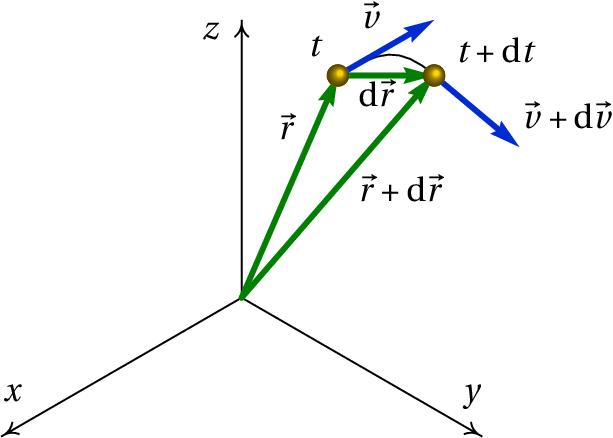
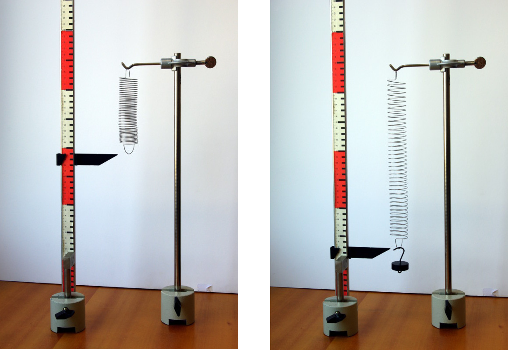
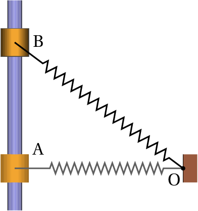
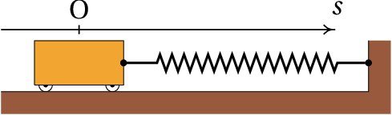
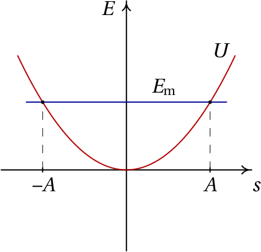
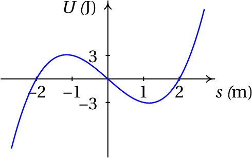
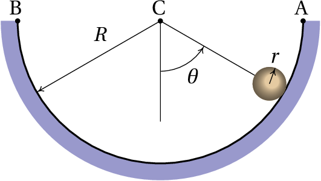
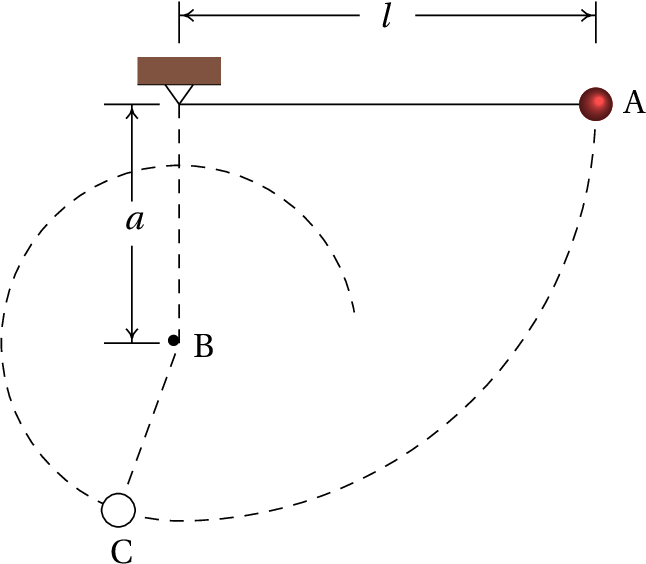

Num salto com vara, a energia cinética da corrida inicial é convertida
em energia potencial elástica da vara dobrada. Enquanto a vara
recupera a forma reta, essa energia potencial elástica é transformada
em energia potencial gravítica. No instante em que a vara recupera a
forma reta o saltador exerce sobre a barra uma força vertical, para
baixo, aumentando ainda mais a sua energia potencial gravítica para
atingir uma altura maior; finalmente, o saltador larga a vara e cai
livremente transformando-se a energia potencial gravítica em energia
cinética.
onde
é a resultante de todas as forças externas, conduz a
uma relação útil chamada teorema do trabalho e da energia
cinética. Para demonstrar esse teorema, considere-se um deslocamento
vetorial infinitesimal
durante um intervalo
infinitesimal de tempo
(figura 6.1).

Figura 6.1: Vetores posição e velocidade num instante
e num instante
posterior
.
No limite infinitesimal em que
tende para zero, o
deslocamento vetorial é na direção tangencial e com módulo igual ao
deslocamento ao longo da trajetória:
(6.2)
Usando esta expressão e multiplicando com produto escalar os dois
lados da equação 6.1 pelo deslocamento infinitesimal, obtém-se
(6.3)
A equação cinemática
implica que
é igual a
e,
como tal,
(6.4)
Integrando os dois lados da equação desde uma posição
, onde a
velocidade é
, até outra posição
onde a velocidade é
,
obtém-se o teorema do trabalho e a energia cinética:
(6.5)
A função da velocidade:
(6.6)
chama-se energia cinética e
o integral da componente tangencial da força ao longo da trajetória
chama-se trabalho da força:
(6.7)
Ou seja, o
teorema
estabelece que
O trabalho realizado pela força resultante, ao longo da trajetória,
é igual ao aumento da energia cinética da partícula.
Observe-se que em geral o trabalho de uma força pode ser calculado
integrando
ao longo de qualquer curva,
mas se essa curva não é a trajetória da partícula, o resultado pode
não ser igual ao aumento de energia cinética. Em geral, um integral de
linha entre dois pontos produz diferentes valores para diferentes
curvas que unem esses pontos.
Unicamente a componente tangencial da força realiza trabalho ao longo
da trajetória e pode alterar a energia cinética da partícula. Uma
força perpendicular à trajetória não realiza trabalho e não altera a
energia cinética da partícula.
O trabalho e a energia cinética têm unidades de energia, ou seja,
joules no Sistema Internacional de unidades (1 J = 1 N·m).
Em coordenadas cartesianas, o deslocamento infinitesimal
é,
(6.8)
Exemplo 6.1
Um canhão dispara uma bala com 5 cm de raio, desde o terraço de
um edifício, na posição inicial (em metros):
com velocidade inicial (metros sobre segundo):
determine a altura máxima atingida pela bala (valor máximo da
coordenada
) e a posição em que a bala bate no chão (
).
Resolução. Este é o mesmo
exemplo 2.3 que já foi
resolvido no capítulo 2, mas será agora
resolvido através do trabalho e do impulso. Uma bala metálica tem
massa volúmica aproximadamente 8 vezes maior que a da água. Nessas
condições, a velocidade terminal da bala é da ordem de 132 m/s. O
problema será resolvido ignorando a resistência do ar e a solução
obtida será usada para comparar a velocidade máxima com a velocidade
terminal. Um valor da velocidade máxima próximo ou por cima da
velocidade limite indicará que a solução obtida tem um erro elevado.
No sistema de eixos da figura, o peso escreve-se
e o
impulso que produz desde o instante do lançamento da bala,
, até
um instante
posterior é,
igualando o impulso à variação da quantidade de movimento, e dividindo
pela massa, obtém-se,
(6.9)
Assim sendo, as componentes
e
da velocidade permanecem
constantes. O valor mínimo do módulo da velocidade ocorrerá no
instante em que (
) for igual a zero; o valor mínimo da
velocidade,
, corresponde ao
ponto de altura máxima.
O trabalho realizado pelo peso é:
igualando à variação da energia cinética e dividindo pela massa,
(6.10)
Substituindo
pelo valor mínimo da velocidade, calcula-se a altura
máxima
Para calcular a posição em que a bala bate no chão, calcula-se o valor
da velocidade, quando a bala bate no chão, substituindo
na
equação 6.10:
e, de acordo com a equação 6.9, o quadrado do módulo da
velocidade é:
(tendo em conta que o tempo
é positivo). Durante esse tempo, o
deslocamento horizontal é igual a:
, já que a componente horizontal da
velocidade é constante. Somando os valores das componentes
e
na posição inicial, obtém-se a posição em que a bala bate no chão:
Observe-se que os resultados são ligeiramente diferentes dos que foram
obtidos no exemplo 2.3. Em ambos casos os resultados
intermédios foram apresentados arredondando para 4 algarismos
significativos, mas todos os cálculos foram feitos usando formato de
vírgula flutuante com precisão dupla (16 algarismos significativos). A
diferença está em que, apesar de o tempo que a bala demora em bater no
chão aparecer igual nos dois casos (3.855 s) os valores internos em
precisão dupla são diferentes, por terem sido usados métodos
diferentes e o erro numérico é diferente nos dois casos.
O valor máximo da velocidade, atingido quando a bala bate no chão, é
34.55 m/s. Como esse valor é muito menor que a velocidade terminal
(132 m/s), a solução obtida ignorando a resistência do ar não estará
muito longe da solução verdadeira.
O teorema do trabalho e da energia cinética só contém uma parte da
informação contida na segunda lei de Newton, já que a equação
vetorial 6.1 são realmente 3 equações (uma para cada
componente) agrupadas convenientemente em vetores. Contudo, é possível
extrair as mesmas três equações a partir da energia cinética. Tendo em
conta que:
(6.11)
então as três componentes cartesianas da equação 6.1 obtêm-se
assim:
(6.12)
e de forma análoga para as componentes
e
. Esta equação é
generalizada no capítulo 8 para qualquer
outro sistema de coordenadas diferentes das cartesianas.
6.2. Forças conservativas
Uma força
que depende unicamente da posição
chama-se
conservativa, se o integral
de linha entre dois pontos nas posições
e
,
(6.13)
dá o mesmo resultado, para qualquer percurso possível desde
ate
.
Assim sendo, é possível escolher um ponto arbitrário na posição
e definir uma função que
em qualquer ponto:
(6.14)
observe-se que com essa definição,
na posição
.
A função
não pode ser definida quando o resultado do integral de
linha em 6.14 não está bem definido, ou seja, quando o
resultado é diferente usando diferentes percursos. A escolha do sinal
negativo na definição é explicada mais à frente. A função
tem
unidades de energia e denomina-se
energia potencial
associada à força conservativa
. A vantagem de definir
energias potenciais é que
é uma função escalar, mais
simples do que a função vetorial
, que permite
caraterizar completamente a força; ou seja, dada uma energia potencial
qualquer é possível encontrar a expressão da força associada.
Usando o teorema fundamental do cálculo vetorial, o integral de linha
da força conservativa
é igual a:
(6.15)
isto é:
O trabalho realizado entre dois pontos por uma força conservativa é
igual à diminuição da
energia potencial associada a essa força.
Observe-se que o trabalho é igual à diminuição da energia potencial, e
não o seu aumento, devido à escolha do sinal negativo na definição da
energia potencial. observe-se também que a definição 6.14
implica que a energia potencial tem valor nulo na posição de
referencia
; o efeito de usar diferentes escolhas do ponto
de referencia
é acrescentar ou subtrair uma constante a
em todos os pontos, mas as diferenças de energia potencial,
, são independentes do ponto usado como referencia. O valor
numérico da energia potencial num ponto não tem nenhum significado
físico; o que tem significado é a diferença dos valores da energia
potencial em dois pontos.
Exemplo 6.2
Calcule o integral de linha da força
,
desde a origem O até o ponto P no plano
, com
coordenadas
, usando os 3 percursos indicados na figura:
C1 é o segmento de reta
(R com
coordenadas
,
), seguido pelo segmento de reta
, C2 é o segmento de reta
(Q com coordenadas
,
),
seguido pelo segmento de reta
e
C3 é o segmento de reta
.
Resolução. A equação vetorial do segmento de reta
é:
, com
. Como tal, o deslocamento infinitesimal ao longo desse
segmento é
e o integral de linha nesse segmento é:
A equação do segmento
é
,
, o
deslocamento infinitesimal é
, e o integral de
linha nesse segmento é igual a:
O integral de linha no percurso C1 é então igual a 1.5.
A equação do segmento
é
,
, e o integral de linha
nesse segmento é,
A equação do segmento
é
,
, e o integral de linha
nesse segmento é,
O integral de linha no percurso C2 é então igual a 2.5.
No segmento
,
é igual a
e, como
tal, a equação do segmento é
,
. O integral de linha no percurso C3 é então
Como o integral é diferente nos 3 percursos considerados, a força
não é conservativa.
No exemplo 6.1 foi possível calcular o integral de linha do
peso, sem conhecer a equação da trajetória parabólica da bala de
canhão, nem ter de calcular a componente tangencial da força, porque
como o peso
é sempre na direção de
, o produto
escalar
é sempre igual a
, para qualquer deslocamento em qualquer direção, e
o integral de linha reduz-se a um integral ordinário numa única
variável.
Em geral, sempre que o produto escalar
dependa de uma única variável, a
força
é conservativa porque o integral de linha reduz-se a
um integral ordinário e o resultado depende apenas dos valores dessa
variável, nas posições inicial e final. As secções seguintes mostram
alguns exemplos.
6.2.1. Energia potencial gravítica
Usando um sistema de coordenadas em que o eixo dos
é vertical e
aponta para cima, o peso é
(6.16)
o produto escalar
é igual a
. Ou seja, o peso é uma força conservativa e a
energia potencial gravítica pode
ser definida por:
(6.17)
Isto é, a energia potencial gravítica de um corpo num ponto é igual ao
produto do seu peso e a altura do ponto. As alturas podem medir-se a
partir de qualquer ponto escolhido como referencia.
6.2.2. Energia potencial elástica
Quando uma mola elástica é esticada ou comprimida, exerce uma força
elástica
nos dois extremos,
no sentido que faz regressar a mola à sua forma original. Se
é a
elongação da mola, igual ao seu comprimento atual menos o comprimento
que teria quando não estiver nem esticada nem comprimida, o valor
absoluto de
é diretamente
proporcional a
(6.18)
onde
é a constante elástica da
mola. A equação 6.18 chama-se
lei de Hooke.

Figura 6.2: Mola elástica pendurada dum suporte horizontal.
A figura 6.2 mostra um procedimento usado para medir a
constante elástica de uma mola. Pendura-se um objeto com peso
, que
estica a mola até ficar numa posição em que a força elástica equilibra
o peso e mede-se a elongação; o valor da constante elástica é o peso
usado,
, dividido pela elongação.

Figura 6.3: Sistema com mola.
No sistema da figura 6.3, o cilindro pode deslocar-se ao
longo de uma barra fixa e está ligado a uma mola com o outro extremo
fixo num ponto fixo O. Em cada posição P do cilindro a elongação
da mola considera-se positiva se a mola estiver esticada, ou negativa
se a mola estiver comprimida; como tal, se o vetor
aponta
no sentido em que
aumenta, o valor da força elástica é
(faz diminuir
quando é positiva ou aumentar
quando é negativa). O produto escalar
(6.19)
depende unicamente da variável
e, por isso, a força elástica é
conservativa.
Usando como referência o valor
(posição em que a mola não exerce
nenhuma força) a energia potencial
elástica é:
(6.20)
6.2.3. Energia potencial de forças centrais
Uma força central é uma força que depende
da posição e em cada ponto do espaço aponta na direção radial (reta
que passa pela origem e pelo ponto) e com valor que depende unicamente
da distância
até a origem:
(6.21)
Como o produto escalar
depende unicamente da variável
, as forças
centrais são sempre conservativas e a energia potencial associada é
igual a:
(6.22)
O ponto de referência costuma ser colocado no infinito, porque estas
forças costumam ser zero quando a distância
é infinita. Dois
exemplos de forças centrais são a força gravítica entre partículas e a
força elétrica entre cargas pontuais.
6.3. Energia mecânica
As forças que não são função unicamente da posição não são
conservativas. Por
exemplo a reação normal e a força de atrito estático sobre um corpo
são reações, que dependem das condições em que se encontra o sistema;
colocando o mesmo corpo na mesma posição de uma mesa, mas com
diferentes objetos colocados por cima, a reação normal tem valores
diferentes. A força de atrito cinético também não é
conservativa. Depende da reação normal e também depende da direção do
movimento (direção da velocidade).
No teorema do trabalho e a energia cinética (equação 6.5), a
resultante das forças externas pode ser escrita como a resultante de
todas as forças conservativas mais a resultante de todas as forças não
conservativas.
(6.23)
o lado direito é a energia cinética na posição final menos a energia
cinética na posição inicial:
. O
primeiro integral no lado esquerdo é igual à soma dos integrais de
todas as forças externas conservativas que atuam no sistema e é igual
à diminuição da energia potencial total:
(6.24)
onde
é a soma de todas as energias potenciais que existam
(gravítica, elástica, elétrica, etc.). Passando esses termos para o
lado direito da equação obtém-se:
(6.25)
Define-se a energia mecânica
igual à soma da energia cinética mais potencial, em qualquer posição
da trajetória:
(6.26)
e a equação anterior é o teorema do trabalho e a energia
mecânica
(6.27)
O integral no lado esquerdo é o trabalho realizado por todas as forças
externas não conservativas, ao longo da trajetória; ou seja,
O trabalho realizado pelas forças não conservativas, a longo da
trajetória, é igual ao aumento da energia mecânica
.
Uma consequência desse resultado é a
lei de conservação da energia mecânica:
quando todas as forças que realizam trabalho são conservativas, a
energia mecânica do sistema permanece constante.
Observe-se que no integral do lado esquerdo da equação 6.27 o
percurso de integração é a trajetória do corpo. Pode acontecer que a
trajetória não seja conhecida previamente, mas de qualquer forma é uma
curva única e bem definida. Se o integral de linha fosse calculado num
percurso diferente à trajetória, o seu valor já não seria igual ao
aumento da energia mecânica. O sinal negativo na definição da energia
potencial prende-se ao fato de a energia mecânica ser definida como
energia cinética mais potencial.
Observe-se ainda que, como a energia cinética nunca pode ser negativa,
a energia mecânica
(potencial mais cinética) em
qualquer posição da trajetória é sempre maior ou igual que à energia
potencial nessa posição.
6.3.1. Gráficos de energia
O gráfico da energia potencial total
de todas as forças
conservativas é muito útil na análise do movimento. A
figura 6.4 mostra um exemplo; a curva a tracejado representa
a energia potencial total do sistema, em função da posição na
trajetória,
. A reta contínua é a energia mecânica; como é uma reta
com ordenada constante, conclui-se que há conservação da energia
mecânica e as únicas forças que realizam trabalho são todas
conservativas.
Figura 6.4: Exemplo de energia potencial e energia mecânica.
As regiões do gráfico onde a reta da energia mecânica está por debaixo
da curva de energia potencial são posições onde o sistema nunca pode
estar, porque a energia mecânica é sempre maior ou igual que a energia
potencial. Por exemplo, no caso da figura 6.4, o corpo não
pode nunca estar nas posições
,
ou
. Para poder
alcançar essas posições, seria necessário aparecer outra força não
conservativa que faça aumentar a energia mecânica.
A equação 6.24 significa que
é uma primitiva de
, com sinal trocado. Assim sendo, conclui-se que
(6.28)
ou seja, nos intervalos do gráfico de
onde a função é
crescente, a resultante das forças conservativas aponta no sentido
negativo de
e nos intervalos onde
é decrescente, a força
conservativa resultante aponta no sentido positivo de
.
No caso do exemplo da figura 6.4, nos intervalos
e
, onde a energia potencial é decrescente, a componente
tangencial da força resultante é positiva, isto é, aponta no
sentido em que a posição
aumenta. Nos intervalos
e
a componente da força é negativa (aponta no sentido em que
diminui). Nos pontos
,
e
a componente tangencial da
força conserrvativa resultante é nula. Esses pontos onde o valor da força
é nulo, chamam-se pontos de equilíbrio.
A energia mecânica não pode ser menor que
. A reta da energia
mecânica corresponde a um valor de 2.25 unidades. Com essa energia
mecânica, o corpo só pode estar a deslocar-se numa vizinhança do ponto
, ou numa vizinhança do ponto 5.
Nos pontos em que a reta da energia mecânica do corpo corta a curva da
energia potencial, a energia cinética é nula e, como tal, a corpo fica
em repouso; no entanto, o corpo não permanece
sempre em repouso nesses pontos, porque a força nesses pontos não é
nula.
Por exemplo, se num instante o corpo está na posição
,
deslocando-se no sentido em que
aumenta, continua a deslocar-se no
mesmo sentido, até parar perto de
; nesse ponto a força aponta no
sentido negativo de
, o que faz com que o corpo regresse para o
ponto
, mas agora com velocidade no sentido negativo de
. O
corpo aproximar-se-á do ponto
, onde o valor da sua velocidade
será nula; nesse ponto, como a componente tangencial da força é no
sentido positivo de
, o corpo regressa à posição
começando
novamente o mesmo ciclo.
6.4. Movimento harmónico simples
Considere-se um carrinho de massa
sobre uma superfície horizontal,
ligado a uma mola com constante elástica
, tal como mostra a
figura 6.5. Se o atrito nos eixos das rodas, a massa das
rodas e a resistência do ar são desprezadas, a única força que realiza
trabalho é a força elástica da mola e há conservação da energia
mecânica.

Figura 6.5: Carrinho a oscilar sobre uma superfície horizontal.
A trajetória é uma reta horizontal; escolhendo a origem O para medir a
posição na trajetória,
, na posição em que a mola não está nem
esticada nem comprimida, a energia mecânica do sistema é,
(6.29)
A figura 6.6 mostra os gráficos da energia potencial e da
energia mecânica constante. O carrinho oscila entre as duas posições
e
, onde a velocidade é nula, e cada vez que passa pela
posição
a energia cinética é máxima. O valor da
amplitude do movimento
oscilatório é
, que depende do valor da energia mecânica; quanto maior for a
energia, maior a amplitude.

Figura 6.6: Energia potencial e energia mecânica deum oscilador harmónico.
A relação entre a amplitude e a energia mecânica obtém-se substituindo
na equação 6.29:
(6.30)
A amplitude e a energia inicial não são valores caraterísticos do
oscilador, mas são condições iniciais que dependem de como é colocado
em movimento o sistema. A equação de movimento do sistema pode ser
obtida aplicando a segunda lei de Newton, ou também derivando a
expressão da energia mecânica (equação 6.29) em ordem ao
tempo e resolvendo para a aceleração tangencial. O resultado é:
(6.31)
Resolvendo a equação cinemática
, com condição inicial
, obtém-se
em função de
(6.32)
igualando essa expressão (no caso em que
é positiva) à derivada
e separando variáveis, obtém-se
(6.33)
onde o tempo
é o instante em que o carrinho passa pela posição
de equilíbrio
. Calculando os integrais obtém-se a expressão para
a posição
em função do tempo
(6.34)
onde a constante
, chamada frequência angular,
é
(6.35)
e
é uma constante que depende da escolha do instante em que
é igual a zero. A frequência, que é o número de oscilações por
unidade de tempo, é igual a,
(6.36)
e o período de oscilação
é o inverso
da frequência:
.
A expressão 6.34 é a solução da equação diferencial
. Qualquer outro sistema em que a segunda derivada da
variável seja igual à variável vezes uma constante negativa, é chamado
também um oscilador harmónico simples e a solução será semelhante a
6.34.
6.5. Energia cinética de rotação
No movimento de translação de um corpo rígido, em cada instante todas
as partes do corpo deslocam-se com a mesma velocidade
e, com
tal, a energia cinética total é igual a um meio da massa total vezes o
valor da velocidade ao quadrado. No caso mais geral do movimento de
rotação sobreposto à translação, para calcular a energia cinética
total será necessário ter em conta que as velocidades de diferentes
partes do objeto são diferentes. Conforme foi demonstrado no
capítulo 3, a velocidade de cada ponto no
corpo, em função da velocidade angular
e da velocidade
de um ponto fixo no corpo rígido, é:
(6.37)
em que
é a posição do ponto relativa ao ponto de referência
O.
A energia cinética total obtém-se somando a energia de todas as partes
infinitesimais do corpo rígido, com massa
,
(6.38)
O valor da velocidade ao quadrado é,
(6.39)
O módulo de
é
, em que
é
a distância desde o ponto até um eixo que passa pelo ponto O, paralelo
a
. Substituindo na expressão da energia cinética,
(6.40)
O integral no primeiro termo é igual à massa total
. Como foi
referido na secção sobre o centro de massa, o único referencial em que
o valor médio do vetor posição é nulo (equação (5.15)) é o
referencial em que a origem está exatamente no centro de massa. Assim
sendo, se o ponto de referência O for o centro de massa, o terceiro
integral será nulo e obtém-se
(6.41)
em que
é o momento de inércia em relação a um eixo que
passa pelo centro de massa, paralelo a
.
Exemplo 6.3
Uma esfera de massa
e raio
parte do repouso a uma altura
numa rampa inclinada um ângulo
com a horizontal. A esfera roda
na rampa, sem deslizar. Determine o valor da aceleração angular da
esfera e a velocidade do centro de massa quando a esfera chega ao fim
da rampa.
Resolução. Como a esfera roda sem deslizar, o ângulo de rotação
está relacionado com a posição do centro de massa C, de
acordo com a expressão que foi obtida
no capítulo 3 para
rodas que rolam sem derrapar:
conclui-se então que o sistema tem um único grau de liberdade, que
pode ser o ângulo
que a esfera roda desde o instante inicial
no topo do plano inclinado. O valor da velocidade angular é
e o valor da velocidade do centro de massa é
.
Escolhendo a posição
no topo da rampa, com
positivo no
sentido em que a esfera desce e energia potencial gravítica nula em
, em qualquer posição
a esfera tem descido uma
altura
, em que
é o ângulo de inclinação
do plano inclinado. A energia mecânica total é,
Enquanto a esfera rode sem derrapar, a força de atrito com a
superfície do plano é atrito estático, que não realiza
trabalho. Ignorando a resistência do ar, a energia mecânica
conserva-se e a sua derivada em ordem ao tempo é nula. Substituindo a
expressão do momento de inércia da esfera em relação ao seu centro de
massa,
, na equação anterior, derivando em ordem ao tempo
e igualando a zero, obtém-se
e a expressão para a aceleração angular
é,
Como a esfera parte do repouso, no ponto inicial a sua energia
cinética é nula e na parte mais baixa da rampa a energia cinética será
igual à energia potencial gravítica inicial, 0, menos a energia
gravítica final,
(6.42)
e a velocidade do centro de massa C no fim da rampa é
(6.43)
Perguntas
(Para conferir a sua resposta, clique nela.)
A posição de uma partícula em função do tempo é dada pela expressão
(SI). Qual dos vetores na lista é perpendicular à trajetória da
partícula no instante
s?
Sobre uma partícula atua uma força com direção, sentido e módulo
constantes. O módulo da força é 1.6 N. Qual é o trabalho realizado por
essa força quando a partícula se desloca uma distância de 20 cm numa
direção que faz 60° com a força?
0.28 J
160 mJ
0.68 J
28 J
16 J
Num oscilador harmónico simples formado por um corpo de massa
pendurado duma mola vertical com constante elástica
, se a massa
for quadruplicada, qual das afirmações será correta?
A frequência duplica.
O período duplica.
A amplitude duplica.
A energia mecânica duplica.
A energia potencial duplica.
A figura mostra o gráfico da energia potencial
, de uma
partícula em função da posição na trajetória,
. Se a partícula está
a oscilar à volta da posição
, com energia mecânica igual a 2 J,
qual é o valor máximo da sua energia cinética?

−3 J
3 J
0
2 J
5 J
A figura mostra o gráfico da força tangencial resultante
, conservativa, sobre uma partícula. Quantos pontos de
equilíbrio existem na região apresentada no gráfico?
0
1
2
3
4
Problemas
Calcule o integral de linha da força do exemplo 6.2:
, desde a origem O até o ponto P no
plano
, com coordenadas
, em que o percurso de
integração é o arco mais curto da circunferência
(centro em
,
e raio 1), que passa pela origem e pelo ponto
P.
A lei da
gravitação
universal estabelece que qualquer corpo celeste de massa
produz
uma força atrativa sobre qualquer outro corpo de massa
, dada pela
expressão:
onde
é a constante de gravitação
universal,
é a distância entre os
dois corpos e
é o versor radial, que aponta desde o corpo de
massa
até o corpo de massa
. (a) Determine a expressão
para a energia potencial gravítica
devida ao corpo de
massa
. (b) Tendo em conta o resultado da alínea anterior,
como se justifica a equação 6.17,
,
para a energia potencial gravítica de um objeto na Terra?
Num salto com vara, um atleta de 70 kg usa uma vara uniforme de 4.5 kg
com 4.9 m de comprimento. O salto do atleta tem três fases: primeiro o
atleta corre, com o seu centro de gravidade a 1 m de altura e com o
centro de gravidade da vara a 1.5 m de altura, com velocidade de 9 m/s
no instante em que possa a vara no chão. Na segunda fase, a energia da
corrida é transferida para a vara, que se deforma e volta a esticar
ficando vertical e elevando o atleta até uma altura próxima da altura
da fasquia (desprezando forças dissipativas, até aqui a energia
mecânica é constante). Finalmente o atleta estende os braços,
aumentando a sua energia mecânica até o seu centro de gravidade subir
a 5.8 m de altura, conseguindo ultrapassar a fasquia a 5.6
m. (a) Determine o trabalho realizado pelo saltador quando
estende os braços. (b) Determine a força média que o saltador
exerce sobre a vara na terceira fase.
Resolva o problema 7 do capítulo 4
aplicando o teorema do trabalho e a energia mecânica. A força exercida
pelo bloco sobre o cone, quando o cone penetra no bloco, é uma força
conservativa ou não?
Num sistema como o da figura 6.5, o carrinho tem massa de
450 g. O carrinho é deslocado 5 cm da posição de equilíbrio e
libertado a partir do repouso, começando a oscilar com um período
de 1.2 s. Determine:
(a) A amplitude das oscilações.
(b) A constante elástica da mola.
(c) A velocidade máxima do carrinho.
Um pêndulo simples é composto por uma esfera de
massa
, pendurada de uma corda muito fina, de comprimento
e
massa desprezável. Quando a esfera parte do repouso, há um único grau
de liberdade, que pode ser o ângulo
que o fio faz com a
vertical. (a) Determine a expressão para a energia mecânica, em
função do ângulo
e da sua derivada
, arbitrando
que a energia potencial é nula em
. (b)
Desprezando a resistência do ar, a energia mecânica permanece
constante e a sua derivada em ordem ao tempo é nula; derive a
expressão da energia mecânica em ordem ao tempo e iguale a zero para
encontrar a expressão para
em função do ângulo.
Uma esfera de raio
roda, sem deslizar, dentro de uma calha
semicircular de raio
, que está num plano vertical (ver figura).
(a) Demonstre que, em função da derivada do ângulo
, a energia cinética da esfera é
(b) Desprezando a resistência do ar, a energia mecânica
é constante e a sua derivada em ordem ao tempo é nula;
derive a expressão da energia mecânica em ordem ao
tempo e iguale a zero para encontrar a expressão da
aceleração angular
em função do
ângulo.
(c) Entre que valores deve estar a energia mecânica para
que a esfera permaneça oscilando dentro da calha?
(d) A partir do resultado da alínea b,
determine a expressão para
, no
limite quando o raio da esfera é muito menor que o
raio da calha (
) e explique porque o
resultado é diferente do resultado obtido para o
pêndulo simples no
problema 6.

Um cilindro com massa de 80 g desliza a partir do repouso, no ponto A,
até ao ponto B, devido a uma força externa constante de 60 N; o
comprimento normal da mola é 30 cm e a sua constante elástica é
6 N/cm. Admitindo que não existe atrito com a barra fixa, calcule a
velocidade com que o cilindro chega ao ponto B.
Resolva o problema 13 do capítulo 5
aplicando o princípio de conservação da energia mecânica.
Um cilindro desce uma rampa de altura
, a partir do repouso,
rodando à volta do seu eixo sem deslizar. Calcule a velocidade do
centro de massa do cilindro quando chega ao fim da rampa. Compare com
o resultado do exemplo 6.3 para uma
esfera; qual dos dois corpos desce mais rápido, a esfera ou o
cilindro?
Uma esfera pendurada com uma corda de comprimento
parte do repouso
na posição A, como mostra a figura. Quando a corda chega à posição
vertical, entra em contacto com um prego fixo no ponto B, que faz com
que a esfera descreva um arco de raio menor que
. Calcule o valor
mínimo que deve ter
para que a trajetória da esfera seja uma
circunferência com centro em B (se
não for suficientemente grande,
a corda deixa de estar esticada quando a esfera sobe e a esfera não
chega até a parte mais alta do círculo).

Considere um projétil que é lançado desde o chão, num quarto onde
existe vácuo, com uma velocidade inicial
que faz um ângulo
com a horizontal.
(a) Calcule o tempo que o projétil demora até chegar ao
ponto máximo da sua trajetória, onde a velocidade
vertical é nula, e a posição nesse ponto.
(b) Com base no resultado da alínea anterior, demonstre
que o alcance horizontal do projétil (distância
horizontal desde onde é lançado até onde cai) é igual
a:
(6.44)
Respostas
Perguntas:1. C. 2. B. 3. B. 4. E. 5. D.
Problemas
(a)
(b) Para um valor qualquer
, a série de Taylor de
é:
O primeiro termo é uma constante, que pode ser ignorada; no segundo
termo, se
for o raio da Terra,
será a altura
desde a
superfície da Terra e
será igual à constante
. Ignorando o resto da série, que para valores de
muito menores
que
não altera significativamente a soma dos dois primeiros
termos, obtém-se
.
(a) 317.4 J (b) 686 N.
24 696 N/m2. A força do bloco não é conservativa, porque só atua
quando o cone está a penetrar; se o cone voltasse a subir, após ter
penetrado no bloco, o bloco já não produzia força sobre o cone.
(a) 5 cm. (b) 12.34 N/m. (c) 26.2 cm/s.
(a)
(b)
(a) Observe que a velocidade do centro de massa da esfera é
e a condição de rodamento sem deslizamento
implica que a velocidade angular da esfera é igual a essa velocidade
dividida por
.
(b)
(c) Maior que
e menor que zero; se a energia
mecânica é exatamente igual a
, a esfera não oscila, mas
permanece em repouso no ponto mais baixo da calha. (d) O valor
absoluto de
é menor num fator 5/7, devido a que parte
da energia potencial gravítica é transformada em energia cinética de
rotação da esfera. A energia cinética de rotação é sempre 2/5 da
energia cinética de translação, independentemente do valor de
;
assim sendo, no limite
também 2/7 da energia
gravítica são convertidos em energia de rotação e apenas os restantes
5/7 fazem aumentar
.
11.74 m/s.
5.274 s−1
. A esfera desce mais rápido que o cilindro,
por ter menor momento de inércia.
(a)
,
Pergunta 1, resposta A: Errada
Este vetor não é perpendicular à trajetória, porque o produto escalar
dele com a velocidade,
, não é igual
a zero.
(clique para continuar)
Pergunta 1, resposta B: Errada
Este vetor não é perpendicular à trajetória, porque o produto escalar
dele com a velocidade,
, não é igual
a zero.
(clique para continuar)
Pergunta 1, resposta C: Certa
A forma mais fácil de encontrar um vetor perpendicular à velocidade,
, é trocar as componentes e mudar o
sinal duma delas:
, que é 4 vezes o
vetor da alínea C.
(clique para continuar)
Pergunta 1, resposta D: Errada
Este vetor não é perpendicular à trajetória, porque o produto escalar
dele com a velocidade,
, não é igual
a zero.
(clique para continuar)
Pergunta 1, resposta E: Errada
Este vetor não é perpendicular à trajetória, porque o produto escalar
dele com a velocidade,
, não é igual
a zero.
(clique para continuar)
Pergunta 2, resposta A: Errada
O trabalho de uma força constante é igual à componente tangencial de
força vezes o deslocamento e a força tangencial é igual a
e não
.
(clique para continuar)
Pergunta 2, resposta B: Certa
(clique para continuar)
Pergunta 2, resposta C: Errada
O trabalho de uma força constante é igual à componente tangencial da
força vezes o deslocamento.
(clique para continuar)
Pergunta 2, resposta D: Errada
A força tangencial é igual a
e não
e a força, em newton, não pode ser multiplicada
pelo deslocamento em centímetros, porque um newton é igual a
kg·m/s2. Use o deslocamento em metros.
(clique para continuar)
Pergunta 2, resposta E: Errada
A força, em newton, não pode ser multiplicada pelo deslocamento em
centímetros, porque um newton é igual a kg·m/s2. Use o
deslocamento em metros
.
(clique para continuar)
Pergunta 3, resposta A: Errada
A frequência é diretamente proporcional à frequência angular, que é
inversamente proporcional à raíz quadrada da massa. Assim sendo, se a
massa é quadruplicada, a frequência diminui a metade.
(clique para continuar)
Pergunta 3, resposta B: Certa
A frequência é diretamente proporcional à frequência angular, que é
inversamente proporcional à raíz quadrada da massa. Assim sendo, se a
massa é quadruplicada, a frequência diminui a metade e o período,
inverso da frequência, duplica.
(clique para continuar)
Pergunta 3, resposta C: Errada
A amplitude depende apenas da energia mecânica, que pode alterar-se
alterando as condições iniciais (posição e velocidade iniciais)
independentemente do valor da massa.
(clique para continuar)
Pergunta 3, resposta D: Errada
A energia mecânica pode alterar-se alterando as condições iniciais
(posição e velocidade iniciais) independentemente do valor da
massa.
(clique para continuar)
Pergunta 3, resposta E: Errada
A energia potencial total, elástica mais gravítica, depende apenas da
constante elástica e não da massa.
(clique para continuar)
Pergunta 4, resposta A: Errada
A energia cinética não pode ser negativa.
(clique para continuar)
Pergunta 4, resposta B: Errada
Com essa energia cinética, a energia potencial seria 2 − 3 =
−1, que não é o valor mínimo que pode ter a energia
potencial.
(clique para continuar)
Pergunta 4, resposta C: Errada
Quando a energia cinética é nula, a velocidade é nula; como a
partícula oscila, terá velocidade diferente de zero em alguns pontos
e, portanto, energia cinética maior que zero.
(clique para continuar)
Pergunta 4, resposta D: Errada
Com essa energia cinética, a energia potencial seria
, que não
é o valor mínimo que pode ter a energia potencial.
(clique para continuar)
Pergunta 4, resposta E: Certa
A energia cinética máxima é igual à energia mecânica, 2 J, menos a
energia potencial mínima, −3 J.


Este vetor não é perpendicular à trajetória, porque o produto escalar dele com a velocidade, , não é igual a zero.
(clique para continuar)